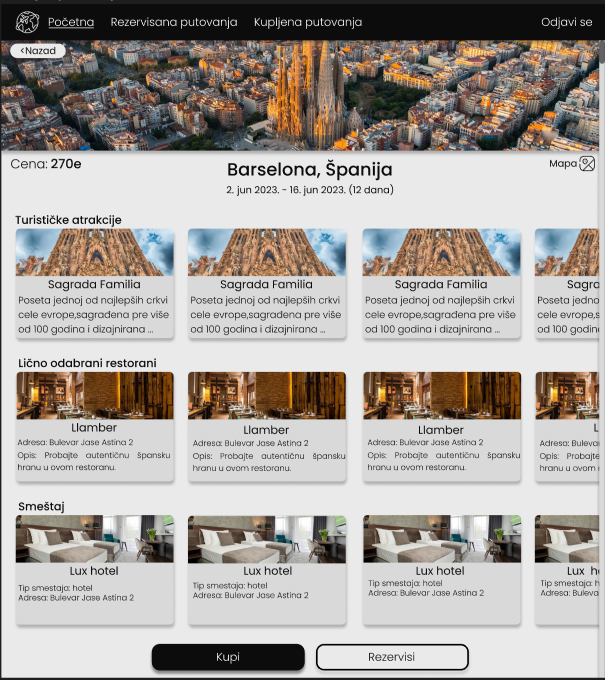

<!DOCTYPE html>

<html lang="en" xmlns="http://www.w3.org/1999/xhtml%22%3E
<head>
    <meta charset="utf-8" />
    <title></title>
</head>
<body>
    <h1>Pregled izmena smeštaj - detalji</h1>
    
    <p>
	U gornjem levom uglu imate dugme ‚‚< Nazad'' koje će Vas vratiti na stranicu pregleda izmene putovanja.
	U donjem desnom uglu se nalazi dugme "Obriši".Nakon klika na dugme obriši pojaviće se iskačući prozor
	u kome možete potvrditi brisanje klikom na dugme "Yes" ili otkazati brisanje klikom na dugme "No".
	Ukoliko odaberete opciju "Yes"	obrisaćete odabrani smeštaj i vratićete se na stranicu pregleda izmene putovanja.
	Ukoliko odaberte opciju "No" ostajete na stranici pregleda izmene odabranog smeštaja.
	Opcija izmeni se nalazi levo od opcije obriši,klikom na dugme izmeni nastavljate na stranicu izmene odabranog smeštaja.
    </p>
</body>
</html>